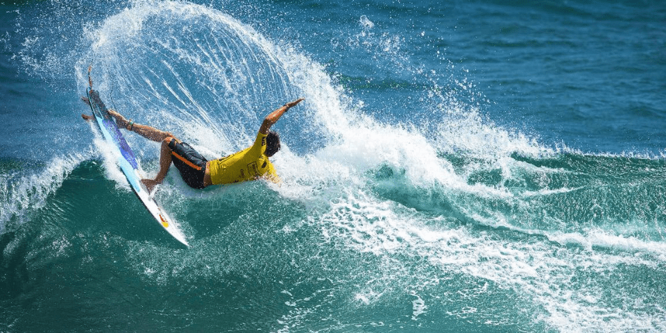

Descubra o fascinante universo do surf conosco!
Seja você um iniciante curioso ou um experiente amante das ondas, este é o lugar certo para explorar tudo o que há para saber sobre esse emocionante esporte.
Explore nossos artigos informativos, vídeos inspiradores e dicas valiosas de especialistas para aprimorar suas habilidades nas águas. De dicas de segurança a guias sobre as melhores praias para surfar ao redor do mundo, estamos aqui para ajudá-lo a aproveitar ao máximo sua jornada no surf.
Prepare-se para mergulhar em um oceano de conhecimento, paixão e adrenalina. A onda está chamando. Você está pronto para surfar?
Explore e Inspire-se!
Além de informações úteis e práticas, também oferecemos uma dose saudável de inspiração para alimentar sua paixão pelo surf. De vídeos incríveis de surfistas desafiando as maiores ondas do mundo a histórias emocionantes de superação e conexão com a natureza, há sempre algo para inspirar e motivar você em sua jornada.
Junte-se à nossa comunidade de surfistas entusiastas e compartilhe suas próprias histórias, fotos e vídeos. Queremos celebrar suas conquistas, grandes e pequenas, e criar uma rede de apoio e camaradagem para todos os amantes do surf.
Então, o que você está esperando? Navegue pelo nosso site, mergulhe em nosso conteúdo e deixe-se levar pela emoção do surf. Estamos aqui para ajudá-lo a transformar seu amor pelo surf em uma experiência inesquecível e gratificante. Prepare-se para uma jornada que mudará sua perspectiva sobre as ondas e o mundo ao seu redor. O surf está esperando por você - vamos começar a explorar juntos!
Como Aprender a Surfar: Dicas Essenciais para Iniciantes
Surf é muito mais do que um esporte é uma conexão profunda com o oceano e uma oportunidade única de se desafiar e encontrar equilíbrio. Se você está interessado em começar a surfar, aqui estão algumas dicas essenciais para te ajudar a iniciar essa jornada emocionante:
1. Escolha a Prancha Certa:
Iniciantes devem começar com uma prancha maior e mais larga, que oferece mais estabilidade e facilita o equilíbrio nas ondas. Uma prancha softboard é uma ótima opção para os primeiros passos.
2. Aprenda as Regras de Segurança:
Antes de entrar na água, familiarize-se com as regras de segurança do surfe. Isso inclui entender as correntes, respeitar os outros surfistas e conhecer as condições do mar.
3. Pratique o Paddling:
Uma boa técnica de remada é essencial para pegar ondas. Passe tempo praticando a remada na água para construir força e resistência.
4. Treine a Técnica de Pop-Up:
O “pop-up” é o movimento de se levantar na prancha quando você pega uma onda. Pratique essa técnica em terra firme até se sentir confiante em reproduzi-la na água.
5. Entenda as Ondas:
Dedique um tempo para observar as ondas antes de entrar na água. Saber identificar a melhor onda para surfar é uma habilidade que se desenvolve com a prática.
6. Tenha Paciência e Persistência:
Surfar pode ser desafiador no começo, mas com paciência e prática constante, você verá progresso. Não desista se não conseguir pegar muitas ondas nas primeiras tentativas.
Para uma introdução visual ao surfe e mais dicas para iniciantes, confira este vídeo no YouTube: Aprenda a Surfar